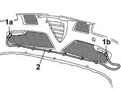

5505C03 WIRING INCORPORATED IN FRONT BUMPER RR WITH BUMPER DETACHED
- Path
- Procedures > 55 ELECTRICAL EQUIPMENT > 5505 INSTRUMENT/GUAGE ELECTRICAL WIRING > 5505C VEHICLE COMPARTMENT WIRING > 5505C03 WIRING INCORPORATED IN FRONT BUMPER RR WITH BUMPER DETACHED
- Kind
- repair procedure (removal / refitting; the operation number is the code)
- Applies to
- all engines; all production periods
- Interactive page
- https://sloeber94.github.io/elrnDB-aGt/en/#/125001595
Applies to: all engines; all production periods
 Removing
Removing
 Refitting
Refitting1. Disconnect the electrical connection (1a) and the electrical connections (1b) from the front direction indicators.
Name | Connector | |
|---|---|---|
1a | Left front direction indicator | See F18 LEFT FRONT DIRECTION INDICATOR ( CONNECTORS ) |
Name | Connector | |
|---|---|---|
1b | Right front direction indicator | See F19 RIGHT FRONT DIRECTION INDICATOR |
2. Disconnect the cable loom in the front bumper from the retainers, then remove it.

Applies to: all engines; all production periods
Refitting
RemovingCheck the condition of the cable loom.
Position the cable loom and fasten it to the retainers.
Connect the electrical connections for the front direction indicators.
Name | Connector | |
|---|---|---|
- | Left front direction indicator | See F18 LEFT FRONT DIRECTION INDICATOR ( CONNECTORS ) |
Name | Connector | |
|---|---|---|
- | Right front direction indicator | See F19 RIGHT FRONT DIRECTION INDICATOR |